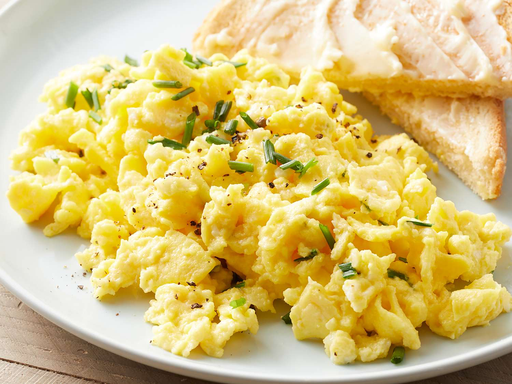

Scramble Egg Recipes

Description
Scrambled eggs are a classic, simple dish made by whisking eggs and then
cooking them gently in a pan over medium-low heat. The eggs are stirred
constantly with a spatula or spoon to create small, soft curds, resulting
in a fluffy and creamy texture. Often, a bit of butter or oil is added to
the pan for richness and to prevent sticking, and a dash of salt and
pepper enhances the flavor. Scrambled eggs can be enjoyed plain or with
added ingredients like cheese, herbs, vegetables, or meats for extra
flavor and texture. They're often served as a breakfast staple but can be
enjoyed any time of the day.
Ingredients
- 2-3 large eggs
- 1 tablespoon butter or oil
- Salt and pepper to taste
- Optional: grated cheese, chopped herbs, diced vegetables, cooked meats
Directions
- Crack the eggs into a bowl and whisk them until the yolks and whites are fully combined.
- Add a pinch of salt and pepper to the eggs and whisk again to incorporate the seasoning.
- Heat a non-stick skillet over medium-low heat and add a small amount of butter or oil.
- Once the butter has melted and is slightly bubbly, pour the whisked eggs into the skillet.
- Let the eggs sit undisturbed for a few seconds, then gently stir with a spatula to form soft curds.
- Continue to stir and fold the eggs until they reach your desired consistency—soft and creamy or slightly firmer.
- Remove the skillet from heat slightly before the eggs are fully set, as they will continue to cook from residual heat.
- Serve the scrambled eggs immediately while hot, optionally garnished with fresh herbs, cheese, or additional seasoning.